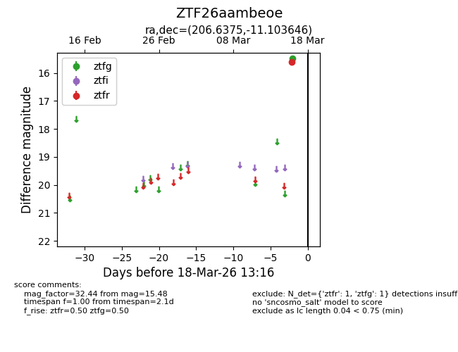
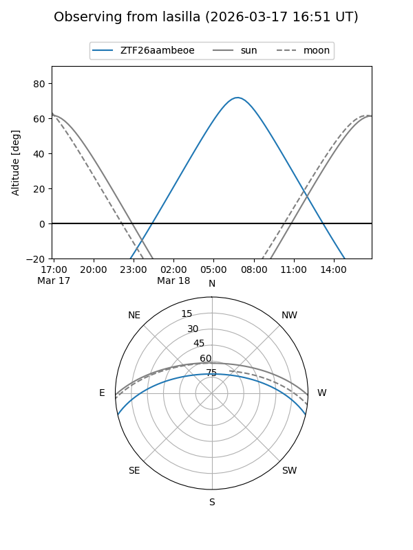
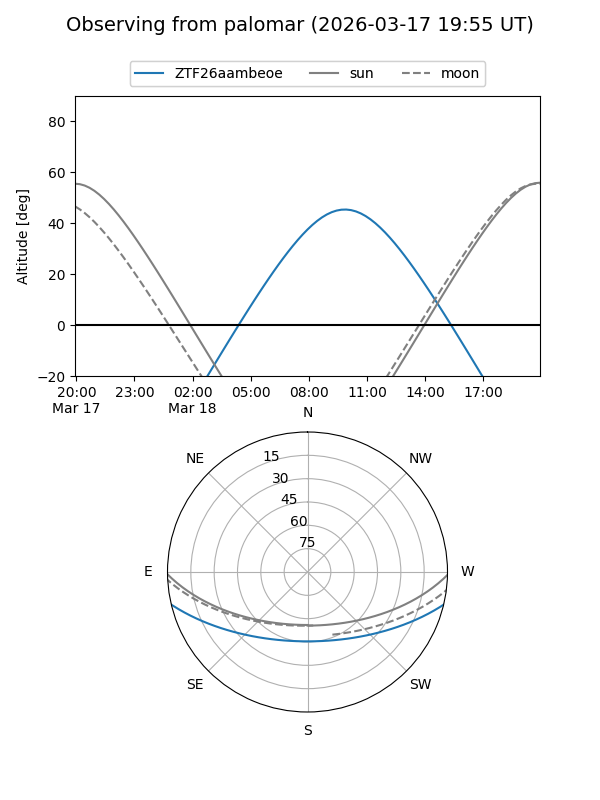

ZTF26aambeoe
Target ZTF26aambeoe at 2026-03-18 13:18
Aliases and brokers:
FINK: link
Lasair: link
ALeRCE: link
alt names
ZTF26aambeoe (ztf,fink_ztf)
Coordinates:
equatorial (ra, dec) = 206.6375,-11.10365
equatorial (HMS+DMS) = 13:46:33.00,-11:06:13.13
galactic (l, b) = (324.0219,+49.49798)
Flags:
Photometry:
last ztfg=15.48, ztfr=15.60
1 ztfg, 1 ztfr detections
Lightcurve

Visibility


Additional plots